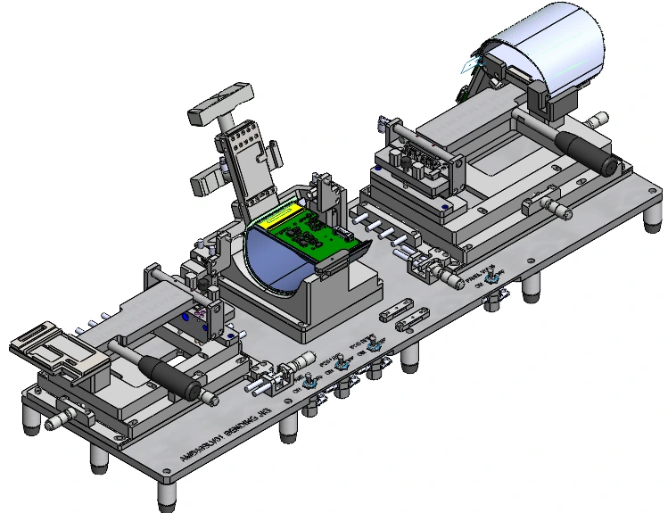

01.

살균소독수 생성기[SHW-120]
시스템 구상 및 금형구조를 이해한 설계를 통해 양산까지 성공한 제품
SHW-130 모델에 타사 홍채인식&체온측정기 내장을 통한
COVID 19 판데믹 시장을 노린 프리미엄 모델 출시

PORTFOLIO
시스템 구상 및 금형구조를 이해한 설계를 통해 양산까지 성공한 제품
SHW-130 모델에 타사 홍채인식&체온측정기 내장을 통한
COVID 19 판데믹 시장을 노린 프리미엄 모델 출시
시스템 구상 및 금형구조를 이해한 설계를 통해 양산까지 성공한 제품
기존 제품과의 부품 공유를 통한 혁신적인 개발비 감축에 성공
설치 환경에 영향을 받지 않는 혁신적인 시스템 도입
삼성 디스플레이 개발 및 LINE 공정에서 사용하는 MANUAL JIG 설계
DISPLAY 특성을 고려한 여러 형태와 구조의 JIG 제작을 위한 고객사 소통 경험
대전방지 등 소재 고유의 특성을 파악하며 설계에 반영
AI를 활용해 PC 웹 관리 화면과 Android 송출 앱을 자체 개발
기구설계·내부 배선·조립까지 한 사람이 직접 수행
전체 구성·MINI ESS 내부·디스플레이 실물로 구현 결과 제시
COVID 19 에 우수한 살균력을 가진 살균소독수 생성기(HOCL) 개발
SHW-130 모델에 홍채인식&체온측정 기능을 추가하여
프리미엄 모델로 시장에 출시
- 시스템 구상 및 프로그램 동작도 제작
- 외관 설계 및 내부 부품 Lay-out 배치
- 서비스 메뉴얼 및 전기안전인증
COVID 19로 인한 팬더믹 시장을 노려 살균소독수 생성기를 개발
Ph 5.0~6.5 / 10~50ppm의 염소농도의 살균소독수 생성 능력 홍채인식기 및 체온측정기 탑재와 출입&소독관리 시스템 구축 금형 제작 비용 2억 이내
시스템 구상 후 동작설명서 작성 및 PCB 제작의뢰 내부 Lay-out 배치 및 외관 설계(금형 또는 NCT), 부품 선정 PSE 전기안전인증 진행
3D Tool : CREO 3.0 2D Tool : Auto Cad 2D
시스템 구상 후 JIG 제작하여 성능 테스트
성능검토 완료 후, PCB 협력사와 미팅, PCB 제작 진행
제품 동작을 위해 센서 인식에 따른 부품 가동의 제어 조건을 지정하여 협력사에 전달
제어 조건에 따른 PCB 회로도 및 전기배선도를 확보 Wire-harness 및 내부 Lay-out 배치에 참고
홍채인식기 및 체온측정기 추가로 인한 RS232 통신 추가
제품 구성에 맞는 소재와 가공방식 선택 (사출 금형)
내부 Lay-out 배치 및 필요한 부품 설계
ABS 및 P.P재질 등 필요한 사양에 따른 내/외관 3D 설계
체결 구조에 따른 BOSS, 응력에 따른 LIB, 사출시 필요한 구배 각을 계산하여 설계에 반영
양산을 위한 조립성 검토 및 형합 구조를 검토하여 설계 진행
일본 판매를 위한 PSE 전기안전인증 진행
PSE-CIRCLE 안전인증 진행
EMI TEST 참관 및 인증 진행 시 필요 서류 대응
COVID 19 판데믹 발생으로 인한 살균소독수 수요 증대와 시장 확대
제품군 특성상 설치 환경에 민감한 영향을 받으나, 급수량 등
환경요소를 극복하는 살균소독수 생성기 개발
- 시스템 구상 및 프로그램 동작도 제작
- 외관 설계 및 내부 부품 Lay-out 배치
- 서비스메뉴얼 및 전기안전인증
설치 환경에 영향을 받지 않는 살균소독수 생성기 개발
Ph 5.0~6.5 / 10~50ppm의 염소농도의 살균소독수 생성 능력 설치 환경에 영향을 받지 않는 제품 개발 - 급수량 변화 및 수온에 의한 영향을 최소화 금형 제작 비용 0.5억 이내 - 기존 생산 모델 대부분의 사출을 공유
시스템 구상 후 동작설명서 작성 및 PCB 제작의뢰 내부 Lay-out 배치 및 외관 설계(금형 또는 NCT), 부품 선정 PSE 전기안전인증 진행
3D Tool : CREO 3.0 2D Tool : Auto Cad 2D
시스템 구상 후 JIG 제작하여 성능 테스트
성능검토 완료 후, PCB 협력사와 미팅, PCB 제작 진행
제품 동작을 위해 센서 인식에 따른 부품 가동의 제어 조건을 지정하여 협력사에 전달
제어 조건에 따른 PCB 회로도 및 전기배선도를 확보 Wire-harness 및 내부 Lay-out 배치에 참고
제품 구성에 맞는 소재와 가공방식 선택 (사출 금형)
내부 Lay-out 배치 및 필요한 부품 설계
ABS 및 P.P재질 등 필요한 사양에 따른 내/외관 3D 설계
체결 구조에 따른 BOSS, 응력에 따른 LIB, 사출시 필요한 구배 각을 계산하여 설계에 반영
개발비 절감을 위한 BODY ASS’Y 품목들은 기존 양산 제품과 동일한 부품을 사용하여 금형비를 절감하여 총 5개의 추가 금형으로 제품 개발을 완료함
양산을 위한 조립성 검토 및 형합 구조를 검토하여 설계 진행
일본 판매를 위한 PSE 전기안전인증 진행
PSE-CIRCLE 안전인증 진행
EMI TEST 참관 및 인증 진행 시 필요 서류 대응
삼성 디스플레이 1차 벤더의 설계 담당자로서 신규 개발 및
LINE 공정에 필요한 MANUAL JIG 설계 및 조립과 시중품 구매
업무를 수행
- 고객사 요청에 맞는 JIG 설계를 위한 미팅 및 소통업무
- Solid Works Tool을 사용한 3D 설계 및 2D 도면화 작업
- ERP 시스템을 통한 업체 발주 및 납품 일정 관리
- 시중품 구매 및 조립, 테스트 업무 진행
매년 70종류의 Manual Jig 설계, 각 Jig당 3~5일 소요
컨셉 구상 1명 (100%) / 기구설계 1명 (100%) / 발주, 조립, 구매 1명(100%)
3D Tool : Solid Works 2D Tool : Auto Cad 2D
참고 자료
SDC 개발 및 LINE 공정에 필요한 Manual Jig 제작
각종 모바일, 패드, 모니터 등 삼성 디스플레이에서 생산하는 디스플레이 전반에 대한 제작 공정 시 부착해야 하는 PART를 Manual Jig를 통해 정 위치에 반복적으로 작업이 가능한 구조를 설계하여 납품
디스플레이 특성과 도면 및 부착 PART 내용 확인 전체적인 Lay-out 배치 및 기구 설계(CNC 가공), 부품 선정 도면 출도 후 발주 및 입고 일정 관리 조립 및 테스트 후 출고
제품 구성에 맞는 소재와 가공방식 선택 (CNC 가공)
Lay-out 배치 및 필요한 부품 설계
AL6061 및 POM재질 등 필요한 사양에 따른 3D 설계
Manual Jig 특성 상, 디스플레이 및 PART 공차를 반영해 STAGE 가변성을 부여
제작비 절감을 위한 공용 PART를 최대한 활용
고객사 사용 시 각종 변수를 대응하도록 호환성 극대화
태블릿과 ESS(비상전력공급)시스템을 활용한 고객방문 환대용
WELCOME BOARD 개발
- AI를 활용한 어플리케이션(APK) 1인 기획/개발 완료
- ESS시스템 구성을 위한 구성/배선 구조 기획/구현 완료
- SOLID WORKS를 사용한 3D 모델링 및 2D도면화 작업 완료
- 시중품 구매 및 조립, 테스트 업무 진행
문구·템플릿·위치·크기와 이미지/영상·방문업체 로고 편집
태블릿 내 로컬 서버와 네이티브 재생 화면 외부 서버 없이 사내 네트워크에서 동작
요구사항 정리 → 코드 구현·수정 → 실물 동작 확인
디스플레이·스탠드·하부 함체의 구성 검토 내부 부품 Lay-out 및 장착 구조 설계
전원·제어 부품 배치와 내부 결선 직접 수행 함체 내부와 도어 계기부의 배선 연결
부품 조립과 배선 정리를 직접 진행 자체 개발한 안내 화면과 실물 시스템 연동
PC 웹 관리 화면 + Android 안내 송출 앱
스탠드형 실물 구성 + MINI ESS 배선·조립
시스템 구상부터 구현까지 동작 확인을 포함한 전 과정 1인 수행
정상 이미지·영상 및 문구·로고 송출
적용 거부 사례에서 정상본 보존·재부팅 복귀
유휴 전원 OFF/ON 3회·영상 2시간 운전 기록
Wi-Fi 자동 재접속 실패와 일부 시간초과 조건의 미검증은 운영 환경 문제로 종료.
End of Document
PDF 보기 ↗맨 위로 ↑